이름을 알면 무엇이 달라질까
AI(Artificial Intelligence)로 웹사이트를 만들다 보면 원하는 화면은 머릿속에 있는데 부를 말이 없을 때가 많아요. 영상은 그런 순간을 세 가지 예로 시작해요. 오른쪽에서 쓱 나오는 거, 스크롤하면 하나씩 나타나는 거, 카드 크기가 들쭉날쭉한 배치예요. 아래 화면은 이 셋에 각각 Drawer, Scroll Reveal, Bento Grid라는 이름표를 붙여 보여 줘요.
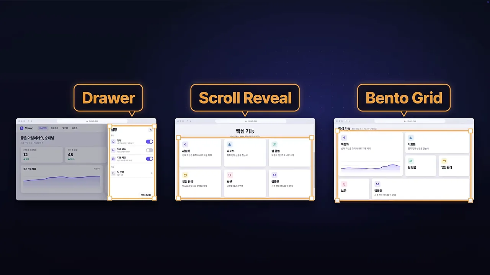
일상어로 말할 때와 이름으로 말할 때
"버튼 누르면 오른쪽에서 메뉴 같은 게 나왔으면 좋겠어"라고 해도 AI는 꽤 그럴듯하게 만들어요. 그런데 같은 부탁을 "설정 버튼을 누르면 오른쪽 Drawer가 슬라이드로 열리게 해 줘"로 바꾸면 달라져요. 화면에 붙은 이름표를 보면 무엇을(Drawer), 어디에서(오른쪽), 어떻게(슬라이드 인)가 한 문장에 다 들어 있어요.
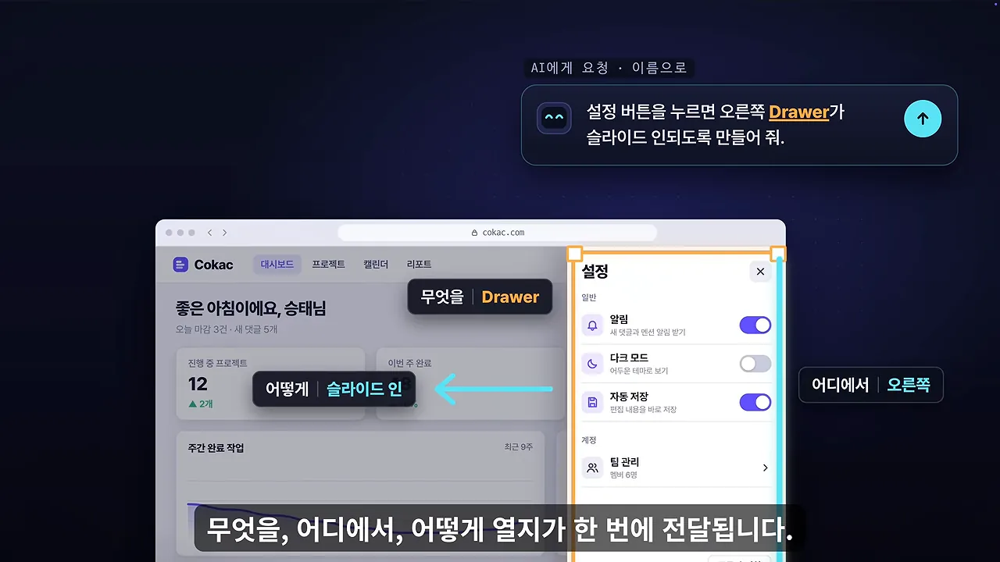
이름을 모르면 원하는 모양에 닿을 때까지 AI와 여러 번 말을 주고받아야 해요. 화면 왼쪽에는 "이거요?"가 두 번 나오고, 사람 쪽에서는 "저거 말고…", "아니, 아까 그 모양…"이라고 답해요. 영상은 이름을 알면 바로 이 왕복이 확 줄어든다고 해요. 원하는 디자인을 찾기도 쉽고, 나중에 고칠 때도 편해져요.
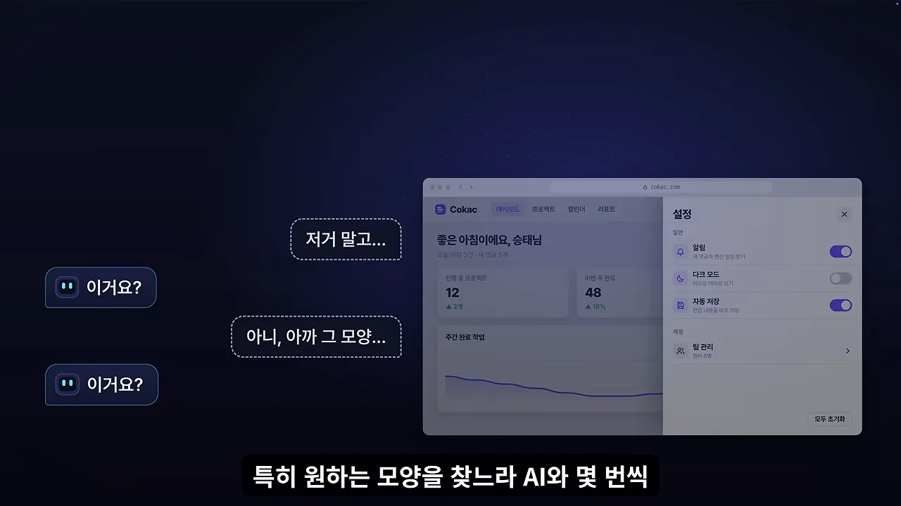
영상은 용어마다 같은 순서로 보여 줘요. 먼저 결과 화면을 보여 주고, 정확한 이름과 언제 쓰는지를 설명한 뒤, AI에게 보낼 수 있는 요청 문장으로 마무리해요. 이 문서도 용어마다 그 요청 문장을 함께 적었어요. 바이브 코딩을 하면서 용어를 외우기보다 "내가 원한 게 이거였구나" 하고 연결해 보라는 게 영상의 권유예요.
레이아웃 7가지: 페이지의 뼈대
레이아웃은 페이지의 큰 뼈대예요. 어디에 무엇을 놓을지 정하는 단어들이라, 요청 문장의 첫머리에 오는 경우가 많아요.
Hero Section · 첫 화면의 대표 영역
사이트에 들어가자마자 보이는 메인 소개 영역이에요. 제품이나 서비스가 무엇인지 첫눈에 알리는 자리죠. 화면에서 'Hero Section' 라벨이 붙은 부분에 큰 제목 "흩어진 일을 한 보드에서 끝내세요", 짧은 설명, 버튼 두 개, 제품 이미지가 모여 있어요.
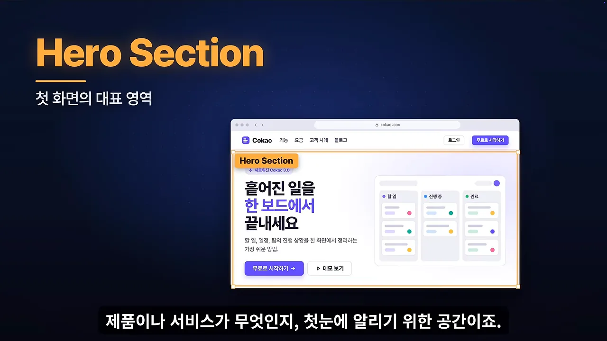
히어로 섹션 안의 '무료로 시작하기' 버튼에는 CTA(Call To Action)라는 이름표가 붙어 있어요. 방문자가 눌러 주길 바라는 핵심 버튼을 이렇게 불러요. 옆의 '데모 보기'는 보조 버튼이라 테두리만 있어요.
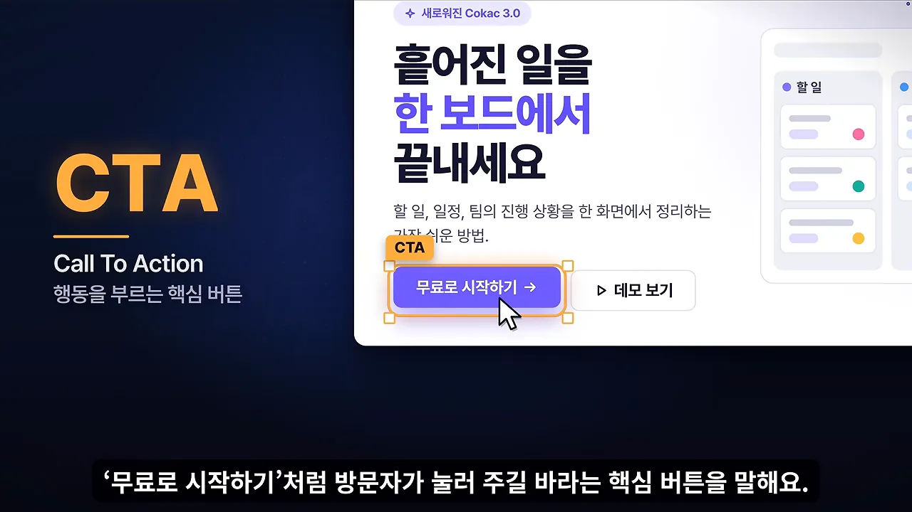
Responsive Layout · 화면 폭에 맞춘 배치
화면 폭을 줄이면 배치가 따라 바뀌는 방식이에요. 왼쪽 휴대폰은 '고정 폭·깨짐'이라 카드가 화면 밖으로 잘려 나가요. 오른쪽 '반응형'은 같은 카드가 한 줄에 하나씩 세로로 다시 놓였어요. PC(Personal Computer)에서만 예쁘고 모바일에서 깨지는 문제를 이렇게 막아요.
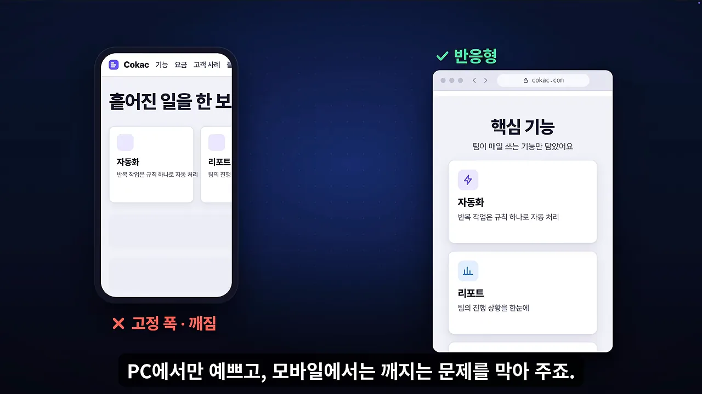
Card Layout · 정보를 카드로 나누기
흩어진 정보를 독립된 박스로 나눠 담는 방식이에요. 상품 목록, 블로그 글, 서비스 기능 소개처럼 같은 모양의 정보가 반복될 때 써요. 화면에서는 자동화·리포트·팀 협업 세 카드에 테두리가 쳐져 있고, 카드마다 아이콘·제목·짧은 설명이 같은 순서로 들어 있어요.
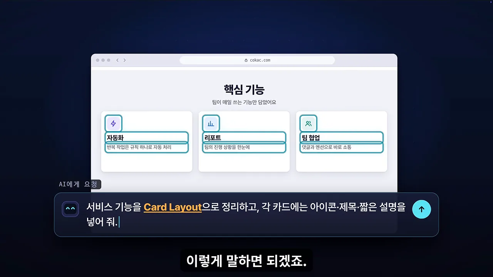
Bento Grid · 크기 다른 카드 격자
모든 카드가 같은 크기일 필요는 없어요. 중요한 항목은 크게, 보조 항목은 작게 섞어 놓은 배치를 벤토 그리드라고 해요. 영상은 이름의 출처를 도시락 그림으로 보여 줘요. 밥 칸은 크고 반찬 칸은 작게 나뉜 일본 도시락(벤토)처럼 칸 크기가 다 달라요.
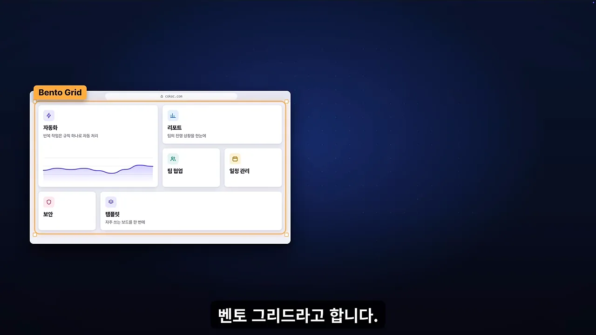
실제 화면에서는 왼쪽 위 자동화 카드가 그래프까지 품은 큰 칸이고, 팀 협업·일정 관리·보안·템플릿은 작은 칸이에요. 아래 요청창에는 "핵심 기능은 큰 카드로, 나머지는 작은 카드로 구성한 Bento Grid"가 적혀 있어요.
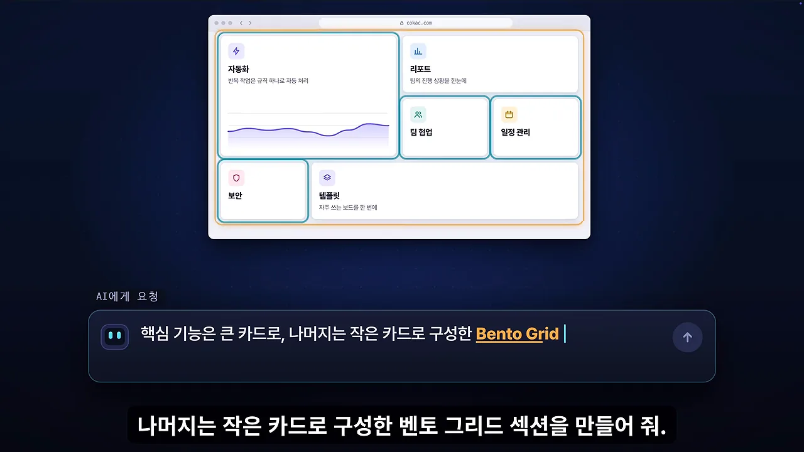
Sidebar Layout · 옆에 고정된 메뉴
왼쪽에 메뉴가 있고 오른쪽이 작업 공간인 관리 화면 구조예요. 화면에서 'Sidebar' 라벨이 붙은 왼쪽 세로 줄에 홈·프로젝트·캘린더·리포트·팀·설정 메뉴가 있어요. 메뉴를 눌러도 바뀌는 건 오른쪽 내용뿐이라, 대시보드나 관리자 페이지에서 특히 많이 보여요.
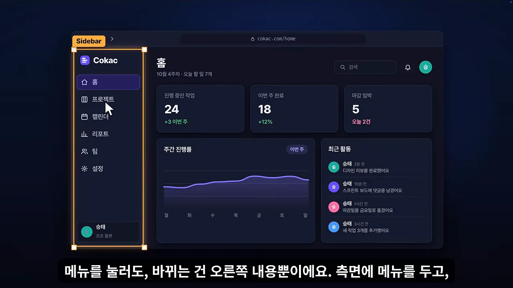
Sticky Header · 스크롤해도 남는 헤더
페이지를 아래로 내려도 헤더가 화면 위에 붙어 있는 형태예요. 스티키는 끈끈하게 달라붙는다는 뜻이에요. 화면의 두 브라우저 모두 본문은 아래로 내려갔는데, 맨 위 Cokac 메뉴 줄은 그대로 남아 '계속 보임' 표시가 붙어 있어요.
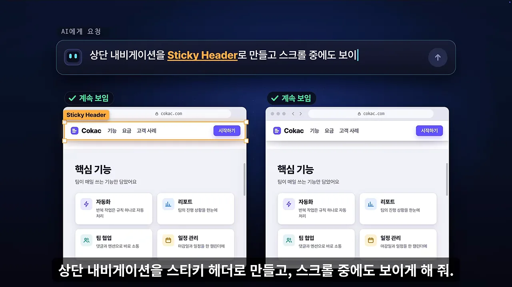
Split Layout · 좌우 분할 배치
이미지와 글을 좌우로 나누는 레이아웃이에요. 화면에서 왼쪽 보라색 칸에 제품 이미지가, 오른쪽 칸에 제목과 버튼이 들어 있어요. 제품 소개나 기능 설명에서 아주 자주 쓰고, 화면이 좁아지면 위아래로 쌓는 게 보통이에요.
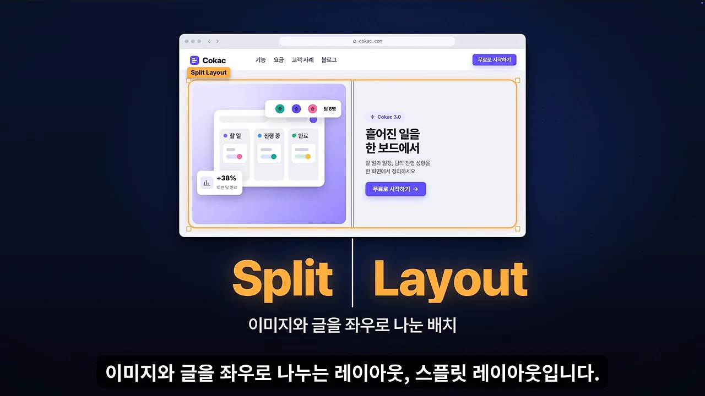
컴포넌트 9가지: 화면 위의 부품
이제 버튼을 누르거나 데이터를 볼 때 나타나는 화면 부품이에요. 이런 부품을 흔히 컴포넌트라고 불러요. 여기 나오는 아홉 개는 "어떤 자리에서, 얼마나 화면을 가리며 나타나는가"로 구분하면 헷갈리지 않아요.
Tabs · 같은 자리에서 내용 전환
여러 종류의 내용을 한 공간에서 바꿔 가며 보여 줄 때 써요. 화면에서 '개요·기능·요금' 세 탭에 테두리가 쳐져 있고, 그 아래 내용만 탭에 따라 바뀌어요. 페이지를 새로 열지 않아요.
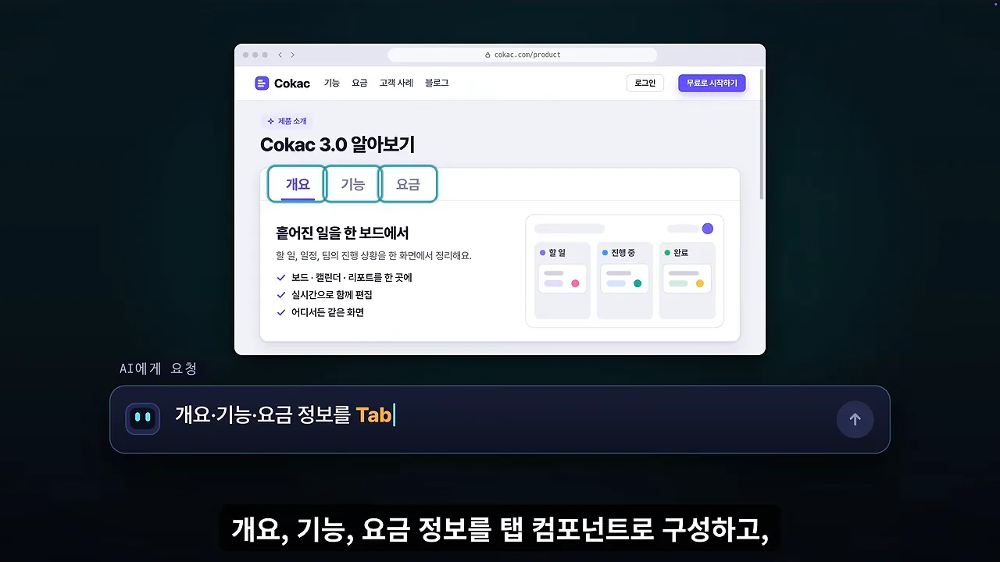
Accordion · 펼치고 접는 목록
궁금한 항목만 펼쳐 보는 UI예요. 악기 아코디언처럼 접혔다 펴졌다 해요. 영상은 탭과의 차이를 한 장면으로 보여 줘요. 왼쪽 'Tabs' 상자에는 옆을 가리키는 화살표가, 뒤쪽 FAQ(Frequently Asked Questions) 목록에는 아래로 펼쳐지는 질문들이 있어요.
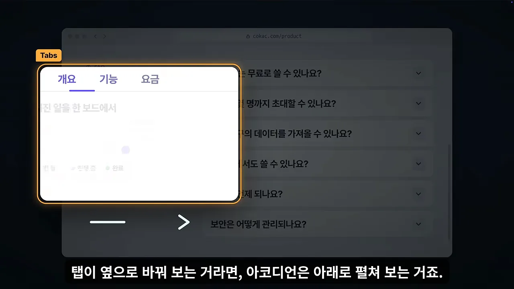
FAQ처럼 내용이 길어지는 페이지에서 자주 보여요. 화면 왼쪽에는 'Cokac는 무료로 쓸 수 있나요?' 같은 질문 여섯 개가 접힌 채로 있고, 오른쪽 요청창에 펼침과 접힘 조건이 모두 적혀 있어요.
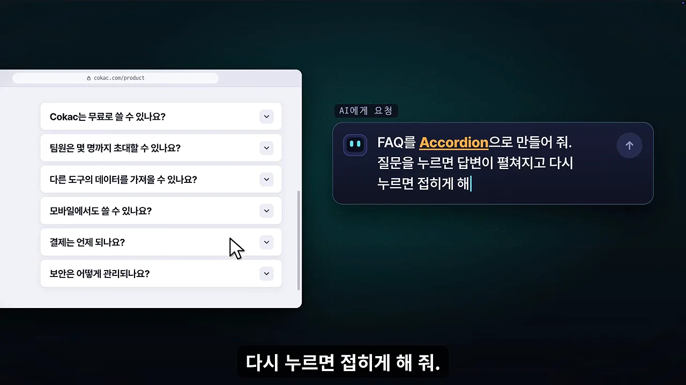
Modal / Dialog · 화면 위 확인 창
지금 화면 위에 별도 창을 띄워 중요한 확인이나 입력을 받는 방식이에요. 저장이나 삭제 확인창에서 많이 써요. 뒤 화면이 어두워지면서 이 창부터 처리하게 만드는 게 특징이에요. 화면에서 노란 테두리로 감싼 어두운 막에 'Overlay / Backdrop' 라벨이 붙어 있고, 그 위에 '프로젝트를 삭제할까요?' 창이 떠 있어요.
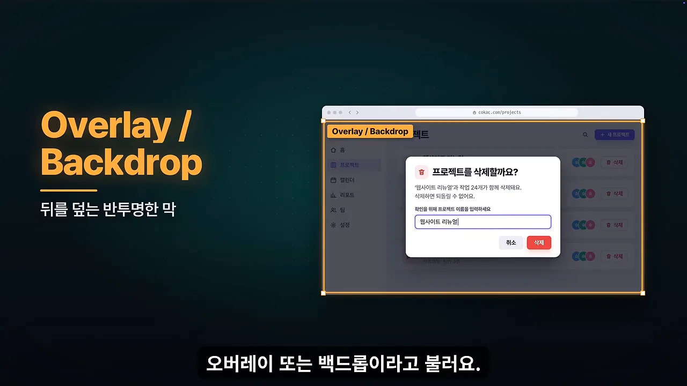
Drawer · 옆에서 열리는 패널
화면 옆에서 서랍처럼 나오는 패널이에요. 영상 맨 처음에 "오른쪽에서 쓱 나오는 거"라고 했던 바로 그 장면이에요. 화면에서 대시보드 오른쪽에 'Drawer' 라벨이 붙은 설정 패널이 열려 있고, 왼쪽 대시보드는 그대로 보여요.
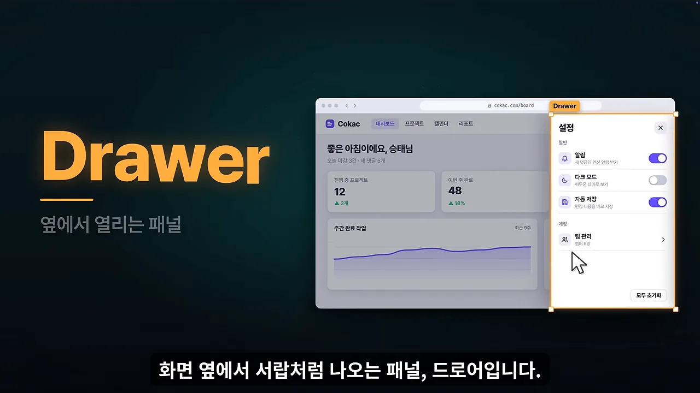
모달과 드로어는 둘 다 무언가를 띄우지만 성격이 달라요. 화면의 두 장면을 보면 왼쪽 'Modal'은 한가운데에 창이 뜨고 뒤가 어두워졌어요. 오른쪽 'Drawer'는 옆에 패널만 열리고 대시보드는 밝은 채로 남아 있어요. 위에 붙은 설명도 '한가운데·집중'과 '옆·흐름 유지'로 갈려요.
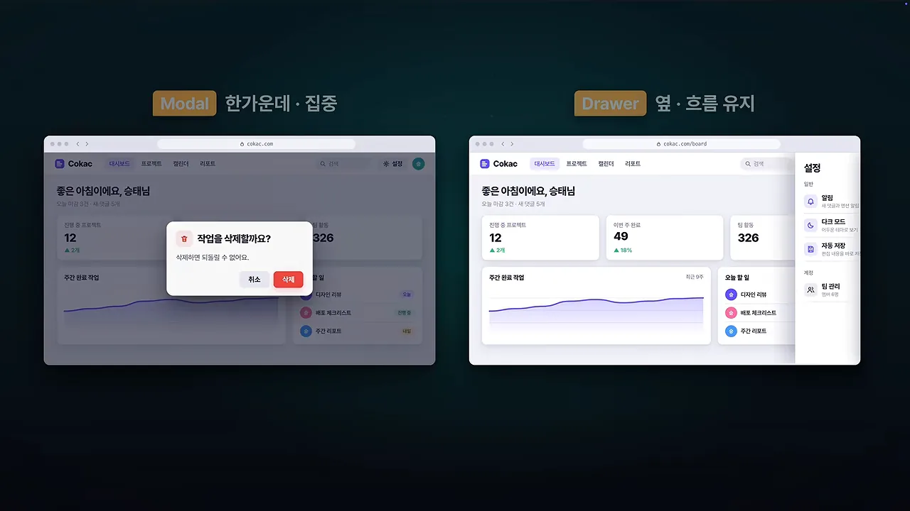
Dropdown · 아래로 펼치는 목록
버튼 하나 아래로 선택 목록이 펼쳐지는 UI예요. 화면에서는 프로젝트 목록 위 '상태: 전체' 버튼 아래로 전체·진행 중·완료 세 항목이 열려 있고, 'Dropdown' 라벨이 붙어 있어요. 옵션을 고르거나 정렬 방식을 바꾸는 메뉴에서 흔히 봐요.
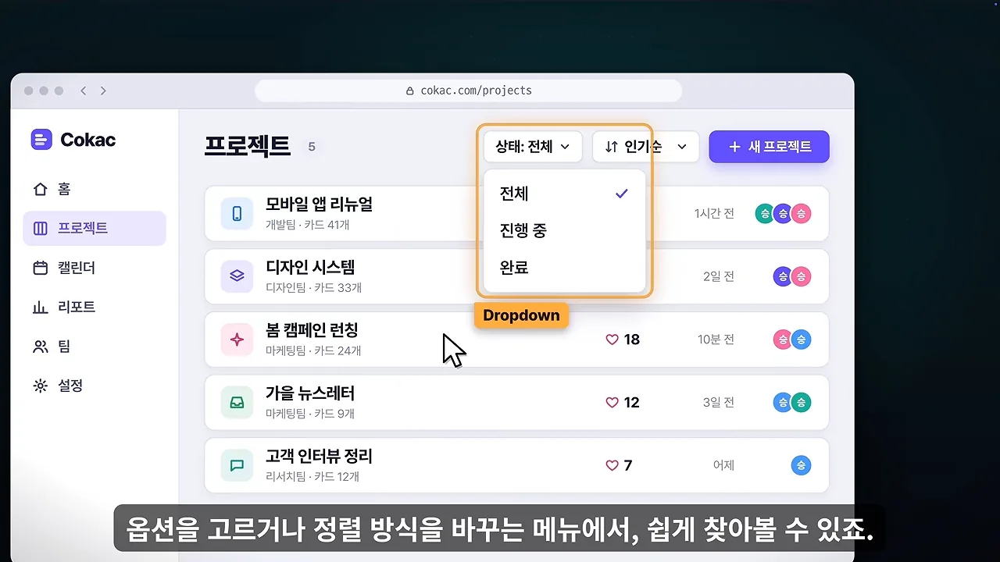
Tooltip · 작은 설명 말풍선
아이콘이나 버튼의 뜻을 짧게 알려 주는 작은 안내창이에요. 화면에서 설정 페이지의 '자동 보관' 옆 물음표에 마우스를 올리자 "완료 후 30일 지난 카드를 보관함으로 옮겨요"라는 말풍선이 떴어요. 화면을 복잡하게 만들지 않고, 궁금한 사람에게만 설명을 보태요.
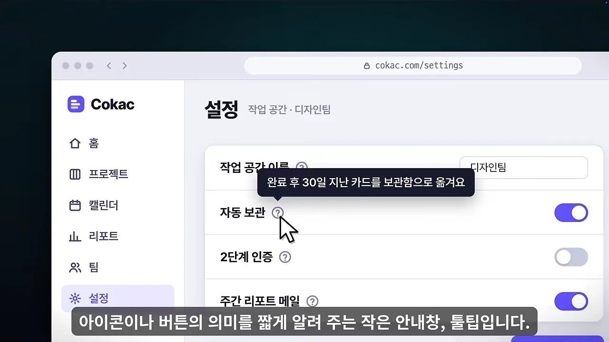
Toast / Snackbar · 잠깐 나타나는 알림
저장 버튼을 누르면 화면 아래에 알림이 잠깐 떴다가 사라져요. 이걸 토스트 또는 스낵바라고 해요. 화면 아래 '저장되었습니다' 알림 옆에 '3초' 표시가 붙어 있어요. 요청 문장에 넣은 지속 시간이 그대로 화면에 반영된 거예요.
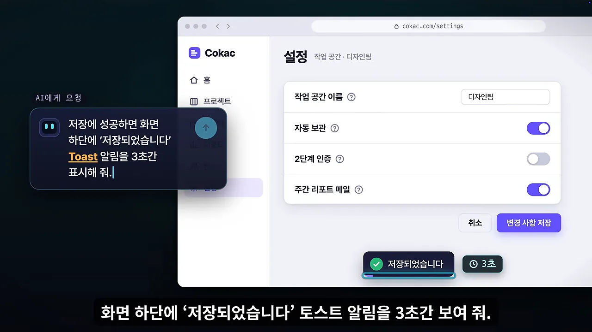
Carousel · 옆으로 넘기는 카드
여러 카드를 옆으로 넘겨 가며 보여 주는 방식이에요. 캐러셀은 회전목마라는 뜻이라, 화면에서도 고객 후기 카드 위에 회전목마 지붕을 씌워 이름을 설명해요. 공간이 한정된 고객 후기나 이미지 갤러리에서 자주 써요.
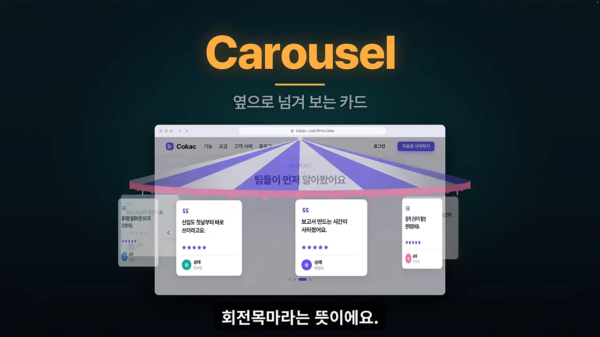
Skeleton Loading · 로딩 중 윤곽 먼저
데이터를 불러오는 동안 빈 화면 대신 회색 윤곽을 먼저 보여 주는 방식이에요. 화면에서 왼쪽은 빈 화면에 로딩 표시만 돌고 있고, 오른쪽 '윤곽 먼저'는 카드 자리에 회색 상자가 미리 깔려 있어요. 뼈대가 먼저 보이니 지금 불러오는 중이라는 걸 자연스럽게 알 수 있어요.
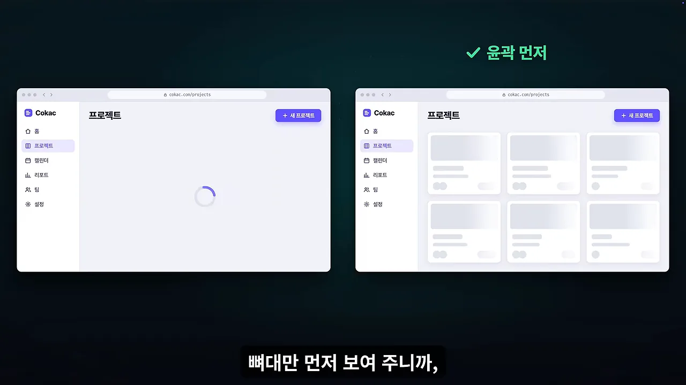
효과 8가지: 화면을 매끄럽게
앞의 용어가 기능을 만드는 말이었다면, 여기부터는 화면을 한 단계 더 매끄럽고 생동감 있게 만드는 효과예요. 영상은 효과마다 '있을 때와 없을 때'를 나란히 놓고 보여 줘요.
Hover Effect · 마우스를 올리면 반응
마우스를 올렸을 때 색이나 크기가 달라지는 효과예요. 화면의 템플릿 카드 세 장 중 마우스를 올린 가운데 '콘텐츠 캘린더'만 살짝 떠올라 있어요. 그 아래 '누를 수 있음' 표시가, 반응 없는 왼쪽 카드에는 '반응 없음' 표시가 붙어 있어요.
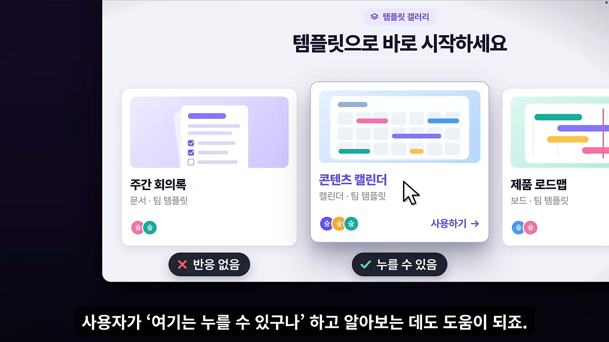
Scroll Reveal · 스크롤하며 등장
스크롤해서 콘텐츠가 보이는 순간 자연스럽게 나타나게 하는 효과예요. 처음에 말한 "스크롤하면 하나씩 나타나는 거"가 바로 이거예요. 화면 왼쪽 '40px' 화살표는 카드가 아래에서 그만큼 올라오며 나타난다는 표시예요. 랜딩 페이지의 기능 소개에서 흔히 봐요.
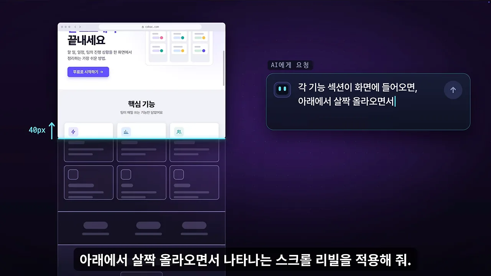
Stagger Animation · 시간차 순차 등장
여러 요소가 한꺼번에 움직이지 않고 시간차를 두고 나타나는 연출이에요. 화면 위쪽 '동시에' 줄은 카드 네 장이 한 번에 나타나요. 아래쪽 '0.1초 간격' 줄은 0.0s, 0.1s, 0.2s, 0.3s 눈금에 맞춰 한 장씩 차례로 나와요. 똑같은 카드인데도 순서가 생기니 리듬감이 느껴져요.
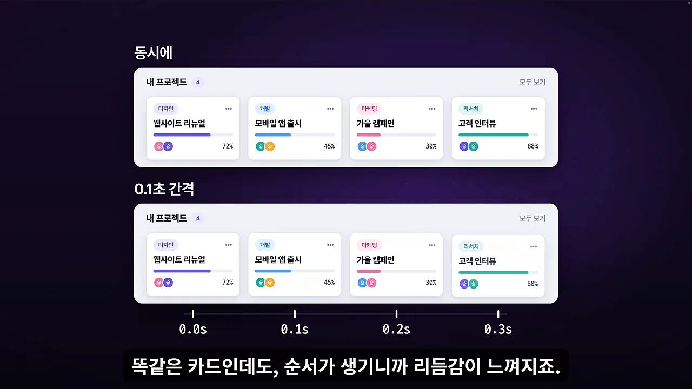
Smooth Transition · 부드러운 상태 전환
상태가 바뀔 때 뚝 끊기지 않고 자연스럽게 이어지게 하는 전환이에요. 화면은 같은 알림 설정 카드를 0.2배속으로 느리게 재생해 비교해요. 왼쪽 '즉시·0ms'는 그래프가 수직으로 꺾이며 '뚝 끊김', 오른쪽 '부드럽게·200ms'는 곡선으로 올라가며 '자연스러움'이에요.
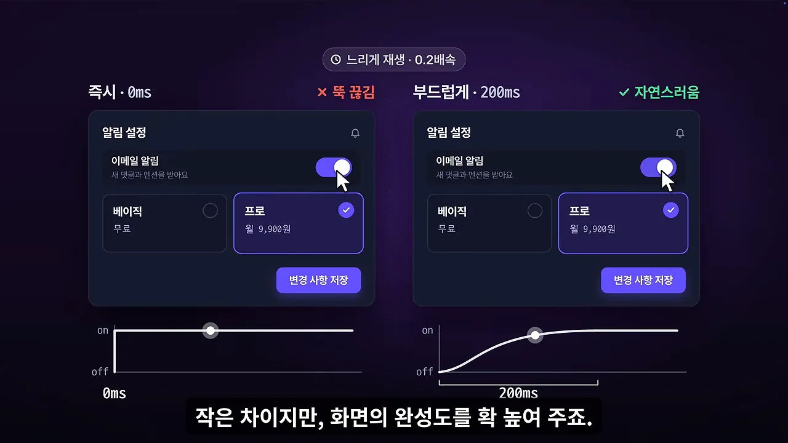
Glassmorphism · 반투명 유리 스타일
뒤쪽이 흐릿하게 비치는 유리 질감의 UI 스타일이에요. 화면에서 보라·파랑 구슬 배경 위에 '72%' 진행률 카드가 반투명하게 떠 있어요. 다만 글자가 잘 안 읽힐 수 있어서 대비를 충분히 확보해야 해요. 요청창 문장에도 반투명 배경, 백드롭 블러, 텍스트 대비가 함께 들어 있어요.
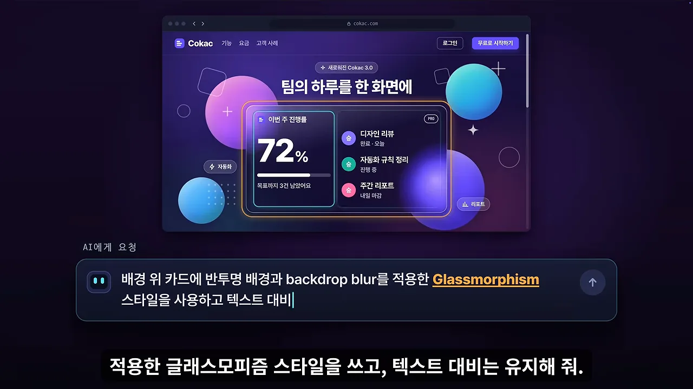
Parallax Scrolling · 깊이감 있는 시차
앞과 뒤의 요소가 서로 다른 속도로 움직이면서 깊이감이 생기는 효과예요. 화면 오른쪽에 페이지를 세 겹으로 쪼개 놓았어요. 맨 위 콘텐츠는 1×, 가운데 장식은 0.6×, 맨 아래 배경은 0.3× 속도로 움직여요. 뒤로 갈수록 느리게 움직이니 멀리 있는 것처럼 보여요.
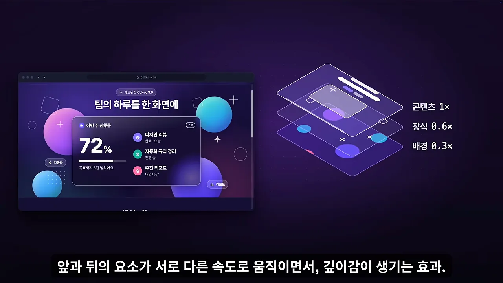
그래서 영상은 요청에 "모바일과 모션 감소 설정에서는 효과를 줄여 줘"를 붙여요. 모션 감소 설정은 사용자가 움직임을 줄여 달라고 기기에 켜 둔 설정이에요. 화면의 '접근성' 패널에서 텍스트 크기, 고대비 모드 아래 마지막 줄 '동작 줄이기' 스위치가 그거예요.
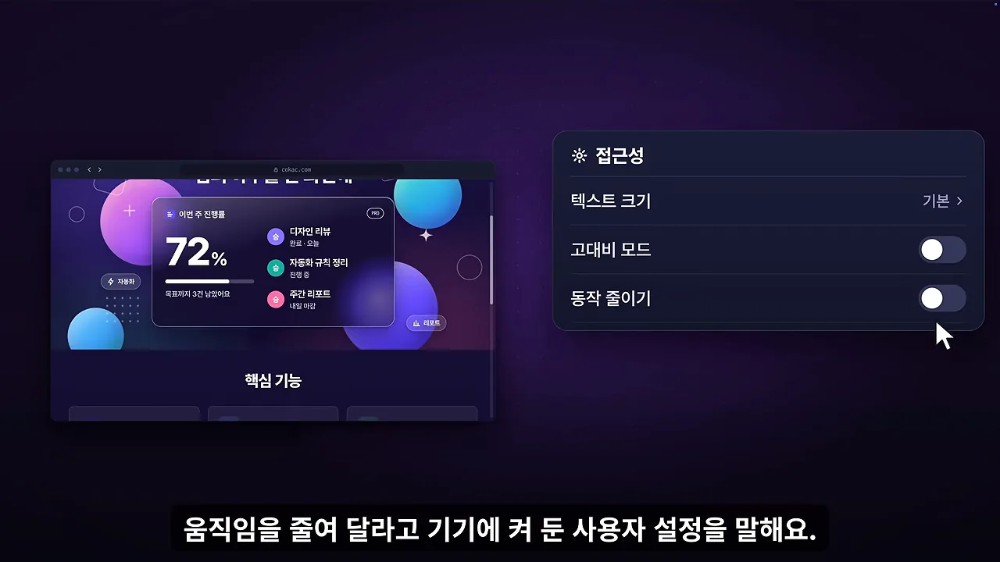
Scroll Snap · 섹션 단위로 착 정렬
스크롤을 놓으면 정해진 섹션에 맞춰 화면이 딱 정렬되는 방식이에요. 화면 왼쪽 '일반 스크롤'은 초록 섹션과 보라 섹션 사이 어정쩡한 곳에서 멈췄어요. 오른쪽 'Scroll Snap'은 보라 섹션 '주간 회의를 바로 시작'이 화면에 꽉 맞춰져 있어요.
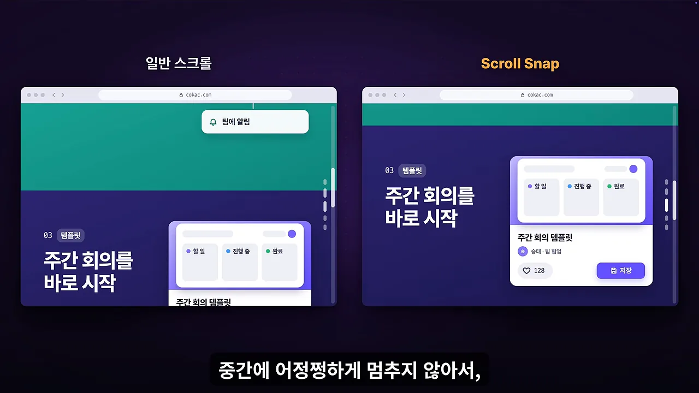
Micro-interaction · 작은 반응 애니메이션
좋아요를 누르면 하트가 톡 튀고, 저장하면 체크로 바뀌는 작은 반응이에요. 클릭, 저장, 선택 같은 작은 행동에 바로 돌아오는 시각 피드백이죠. 화면 왼쪽 '반응 없음'에서는 저장 버튼을 눌러도 아무 변화가 없어 "저장된 건가?" 말풍선이 떠요. 오른쪽 '반응 있음'은 바로 다음 장면에서 버튼이 체크 표시로 바뀌어요.
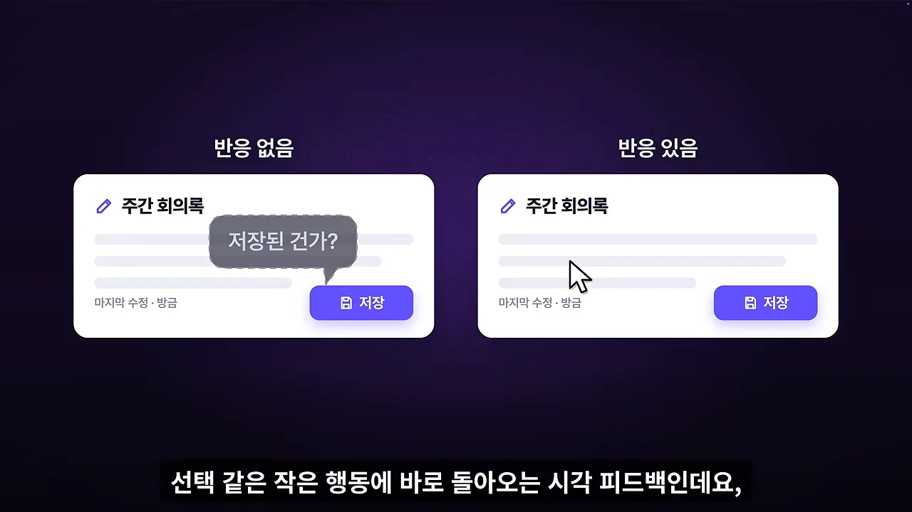
용어로 다시 써 본 요청
마지막으로 영상은 지금까지 본 용어를 하나의 요청에 모아 봐요. 먼저 흔히 하는 요청이에요. "세련된 웹사이트 만들어 줘. 카드도 예쁘게 하고 스크롤 효과도 넣고, 설정 화면도 좀 멋지게 나오게 해 줘." 화면 오른쪽에는 이 요청 속에 숨어 있는 용어들이 이름표로 쌓여 있어요. Hero Section부터 prefers-reduced-motion까지, 말하지 않았을 뿐 사실 원하던 것들이에요.
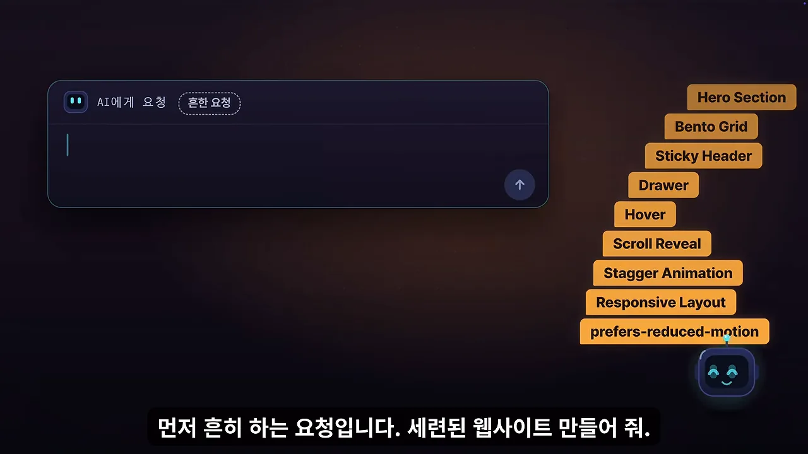
이렇게 말해도 AI는 그럴듯한 결과를 내요. 하지만 화면을 보면 결과물 곳곳에 물음표가 붙어 있어요. 버튼 위에는 "누르면 무슨 일?", 왼쪽에는 "어떤 레이아웃?"이라는 말풍선이 떠 있어요. 어떤 레이아웃인지, 무엇을 누르면 무슨 일이 생기는지, 애니메이션이 언제 어떻게 보이는지가 정해지지 않았다는 뜻이에요.
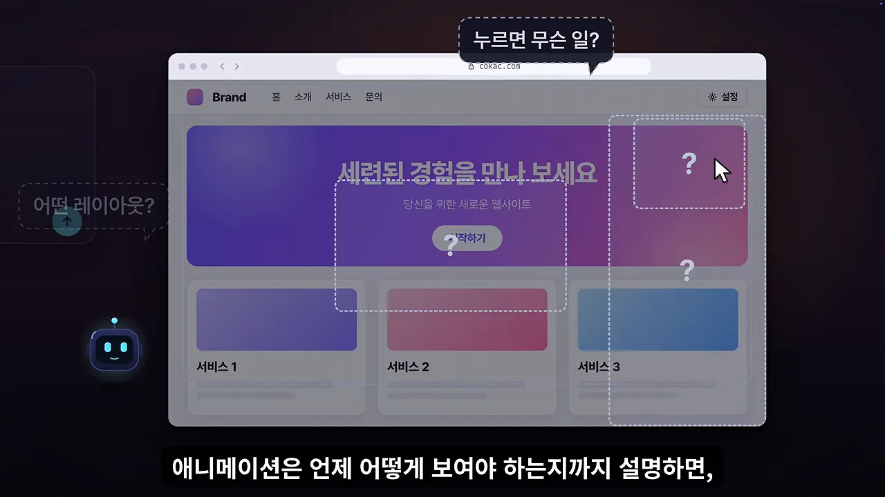
용어로 다시 쓴 요청
같은 부탁을 오늘 본 용어로 다시 쓰면 이렇게 돼요. 화면의 '용어로 다시' 요청창에 적힌 문장을 그대로 옮겼어요. 줄마다 용어 하나가 화면의 한 부분을 맡고, 몇몇 줄에는 닫는 방법이나 모바일 열 수 같은 조건이 붙어 있어요.
생산성 SaaS 웹사이트를 만들어 줘.
– 첫 화면은 Hero Section
– 핵심 기능은 Bento Grid
– 상단은 Sticky Header
– 설정은 오른쪽 Drawer · ESC, 바깥 클릭으로 닫기
– 카드에는 가벼운 Hover와 Scroll Reveal
– 0.1초 간격의 Stagger Animation
– 모든 섹션은 Responsive Layout · 모바일 1열
– 과하지 않게, prefers-reduced-motion 고려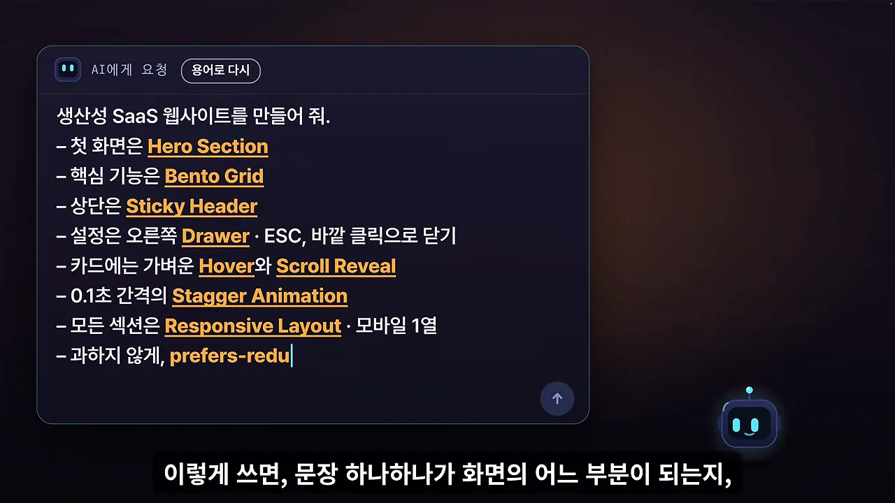
영상은 이렇게 쓰다 보니 영어 단어가 잔뜩 섞인 판교 사투리 같아졌다고 웃으며 넘어가요. 그리고 중요한 건 전문 용어를 많이 쓰는 게 아니라고 짚어요.
중요한 건 전문 용어를 많이 쓰는게 아니라 정확한 용어에 원하는 동작과 조건을 붙이는 거예요.
— 영상 10:39
공식: UI 용어 + 원하는 동작 + 적용 조건
영상은 이걸 세 칸짜리 공식으로 정리해요. 화면의 첫 칸 'UI 용어'에는 Drawer, 둘째 칸 '원하는 동작'에는 '오른쪽에서 열림', 셋째 칸 '적용 조건'에는 '설정 버튼 클릭, ESC로 닫힘'이 들어가요. 용어만 말하면 무엇인지는 정해지지만, 언제 열리고 어떻게 닫히는지는 동작과 조건이 정해 줘요.

치트시트: 24개 한눈에 보기
용어를 다 외울 필요는 없어요. 영상은 마지막에 24개를 한 장에 모은 치트시트를 보여 줘요. 왼쪽부터 레이아웃 7개, 컴포넌트 9개, 효과 8개 묶음이고, 칸마다 작은 그림과 이름, 한 줄 설명이 들어 있어요.
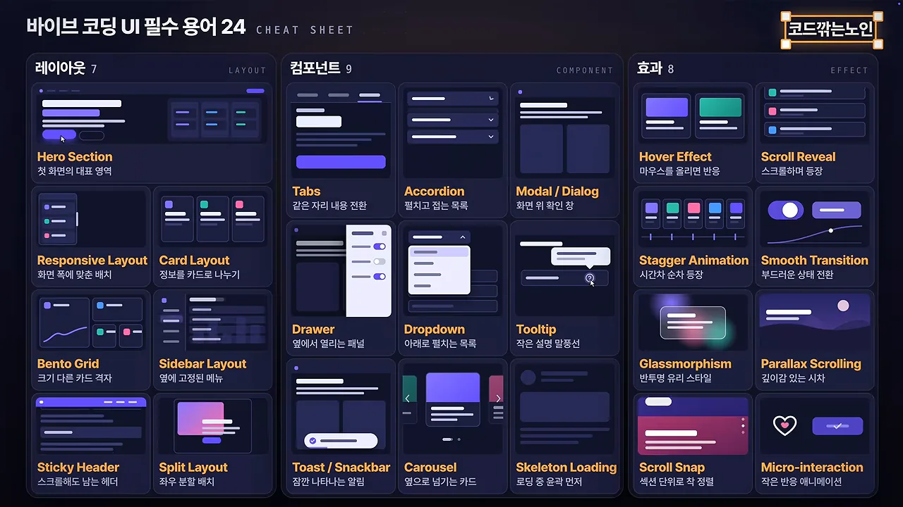
치트시트 글씨가 작아서 아래 표로 옮겼어요. '한 줄 설명'은 치트시트에 적힌 그대로이고, 시각은 그 용어를 다룬 영상 위치예요.
| 묶음 | 용어 | 한 줄 설명 | 영상 |
|---|---|---|---|
| 레이아웃 | Hero Section | 첫 화면의 대표 영역 | 01:23 |
| 레이아웃 | Responsive Layout | 화면 폭에 맞춘 배치 | 01:53 |
| 레이아웃 | Card Layout | 정보를 카드로 나누기 | 02:14 |
| 레이아웃 | Bento Grid | 크기 다른 카드 격자 | 02:35 |
| 레이아웃 | Sidebar Layout | 옆에 고정된 메뉴 | 02:57 |
| 레이아웃 | Sticky Header | 스크롤해도 남는 헤더 | 03:20 |
| 레이아웃 | Split Layout | 좌우 분할 배치 | 03:39 |
| 컴포넌트 | Tabs | 같은 자리 내용 전환 | 03:58 |
| 컴포넌트 | Accordion | 펼치고 접는 목록 | 04:27 |
| 컴포넌트 | Modal / Dialog | 화면 위 확인 창 | 04:49 |
| 컴포넌트 | Drawer | 옆에서 열리는 패널 | 05:14 |
| 컴포넌트 | Dropdown | 아래로 펼치는 목록 | 05:40 |
| 컴포넌트 | Tooltip | 작은 설명 말풍선 | 05:54 |
| 컴포넌트 | Toast / Snackbar | 잠깐 나타나는 알림 | 06:11 |
| 컴포넌트 | Carousel | 옆으로 넘기는 카드 | 06:28 |
| 컴포넌트 | Skeleton Loading | 로딩 중 윤곽 먼저 | 06:45 |
| 효과 | Hover Effect | 마우스를 올리면 반응 | 07:02 |
| 효과 | Scroll Reveal | 스크롤하며 등장 | 07:26 |
| 효과 | Stagger Animation | 시간차 순차 등장 | 07:45 |
| 효과 | Smooth Transition | 부드러운 상태 전환 | 08:02 |
| 효과 | Glassmorphism | 반투명 유리 스타일 | 08:21 |
| 효과 | Parallax Scrolling | 깊이감 있는 시차 | 08:38 |
| 효과 | Scroll Snap | 섹션 단위로 착 정렬 | 09:05 |
| 효과 | Micro-interaction | 작은 반응 애니메이션 | 09:25 |